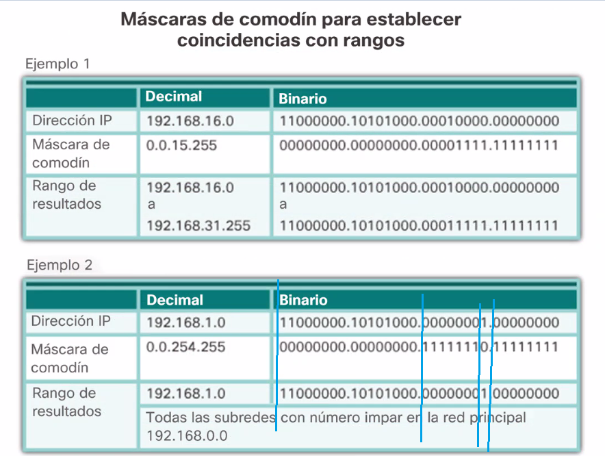

Notese en el segundo ejercicio como quiere que sea coindicente en el ultimo bit del tercer octeto. Es decir que quiere que la mascara sea coincidente con 1 en esa posicion. Esto descarta todas las direcciones IPPARES


El 1 mas que eliminar cosas quiere decir cualquiera sirve.

La 192.168.10.0 puede circular pero la 11 no porque esta implicida.
A pesar de que la 11 no tiene salida si tiene entrada del serial, y se podria usar la telnet con la 10 para mandar mensajes afuera.
Es lo mismo que el anterior, pero estas negando ahora la 192.68.10.10 esa compu no puede salir. Las demas si

Nota, para modificar la lista de acceso se tiene que borrar la anterior y generarla de nuevo.
Importante: Oden de las instrucciones
Primeno niega las computadoras que no tienen acceso y ya despues habilitas una red completa.